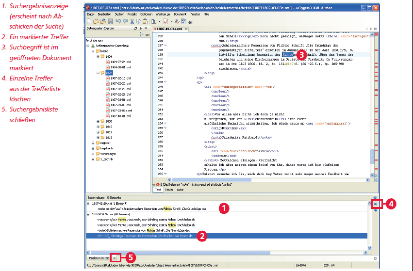

Die Suchergebnisse werden in einem neuen Fenster unten (1) ausgegeben. Geordnet nach Dateien sind dort jeweils in einer Zeile die gefundenen Ergebnisse mit ihrem Kontext angegeben. Ein Doppelklick auf eine Ergebniszeile (2) öffnet die entsprechende Datei. Die gesuchte Stelle wird auch im nun geöffneten Dokument (3) markiert.
Mit Hilfe des blauen [x] am rechten Rand der Ergebnisliste (4) kann man einzelne Treffer aus der Ergebnisanzeige löschen.
Ein Klick auf [x] im Karteikartenreiter unten (5) schließt die Suchergebnisanzeige.
